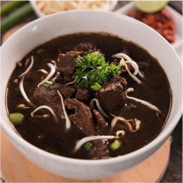
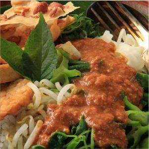
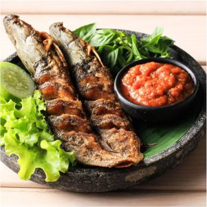

1. Rawon

Rawon is an Indonesian dish originating from Ponorogo in the form of a black meat soup with a special blend of spices using kluwek.
Rawon, spread outside Ponorogo because Ponorogo has an important role from time to time, until it is known as a typical dish of East Java (Arekan area), the eastern Central Java community (Surakarta area).
The meat for rawon is generally beef cut into small pieces, mainly brisket.
The seasoning for the soup is very Indonesian, a mixture of shallots, garlic, galangal (laos), coriander, candlenut, lemongrass, kunir, chili, kluwek, salt, and vegetable oil. All these ingredients are mashed, then sautéed until fragrant.
This spice mixture is then put in the meat stew broth together with the meat.
The dark color of rawon comes from kluwek, which is because Ponorogo culture is still thick with magical things. Abroad, rawon is referred to as black soup.
2. Pecel

Pecel is a food originating from Ponorogo, East Java. It is usually served with peanut sauce as the main ingredient and mixed with various types of vegetables.
Pecel is especially popular in the regions of Yogyakarta, Central Java, and East Java. Etymologically, "pecel" comes from the Javanese language and can be interpreted as 'mashed' or 'crushed by pounding'.
Pecel originated in Ponorogo Regency, East Java, one of the bean-producing regions in Indonesia. In the life of the people of Ponorogo, peanut sauce is also used in the seasoning of Ponorogo Satay.
This food is also similar to gado-gado, the difference being the mixture of ingredients and the texture of the seasoning.
It became known outside Ponorogo because it was brought by the Ponorogo Warok during the Dutch East Indies era who migrated in various regions in Indonesia, especially in East Java to outside Indonesia.
Then came Pecel Madiun which is a pecel dish originating from Madiun. In addition, pecel can also be found in Malaysia, the Philippines, Thailand, and Suriname with a slightly different flavor from pecel in Indonesia due to the different types of beans used.
3. Lele Pedas

Pecel lele or pecek lele is a dish from East Java, Indonesia, consisting of catfish and tomato chili sauce. Typically, pecel lele consists of catfish dry-fried in oil, served with tomato chili sauce and fresh vegetables.
The usual salad consists of basil, cabbage, cucumber and long beans. This food is very popular in Java as an alternative to chicken dishes, especially fried chicken.
In some regions, it has different nicknames. In Jember Regency it is usually called "pecek lele", Malang City calls it "lalapan lele".
Usually the presentation of catfish pecel is like the presentation of gourami, tilapia, etc., namely a special sauce with the aroma of shrimp paste, vegetables such as long beans, cucumber, and basil.
Many catfish pecel stalls stand in the city and roadside as street vendors, lesehan lalapan pecek catfish and on several campuses such as in Java many stand to serve students because the price is relatively cheap.
Catfish pecel sellers are usually overseas residents who come from Lamongan, East Java.